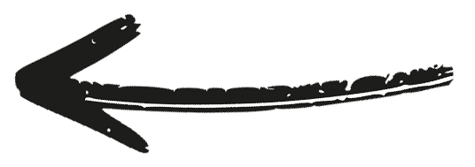

תוכנית חניכה
לכל תהליך טוב ויעיל יש מטרות, וגם כדי לבצע תהליך חניכה אפקטיבי יש להגדיר יעדים
תוכנית חניכה, מה זה?
1
תוכנית עבודה של העובד כדי לשפר את ביצועיו
2
מגדיר יעדים אישיים לעובד כדי להגיע לתפקוד הטוב ביותר
התחלנו בשיחת פתיחה ועכשיו בונים תוכנית חניכה.
התוכנית מבוססת על החוזקות והפערים של העובד וכוללת לפחות שלושה יעדים לפרק זמן מסוים.
אחר כך, מקיימים שיחת חוזה חניכה ומשם הקסם קורה!
התוכנית מבוססת על החוזקות והפערים של העובד וכוללת לפחות שלושה יעדים לפרק זמן מסוים.
אחר כך, מקיימים שיחת חוזה חניכה ומשם הקסם קורה!
איך זה עובד?
מה היה לנו פה?
לכל יעד ניתן
טיפים
מדדים
מופעים
לכתוב יעדים חכם - להיות SMART
Time bound - מטרה תחומה בזמן
על היעד להיות מתאים לפרק הזמן הנתון לחניכה
Relevant - מטרה רלוונטית
על היעד להיות רלוונטי למאפייני הנחנך ולנקודות חוזק וחולשה שלו
Achievable - מטרה ברת השגה
מטרה היגיונית שניתן להשיג אותה, ריאלית
Measurable - מטרה מדידה
המטרה צריכה להיות ניתנת לבחירה בכדי לדעת האם הושגה או לא
Specific - מטרה ספציפית
חייבת להיות מוגדרת היטב, בלי הכללות, הפשאות או פשפושים
ומה עם מדדים להצלחה?
מדד להצלחה = קריטריון שנגזר מהיעד ומעיד על העמידה בו
איך נכתוב מדד להצלחה?

היעד
ירידה פרטים
המדד
ביצוע משמרת שלמה עם הזמנות מדויקות ללא הערות מצד הלקוחות